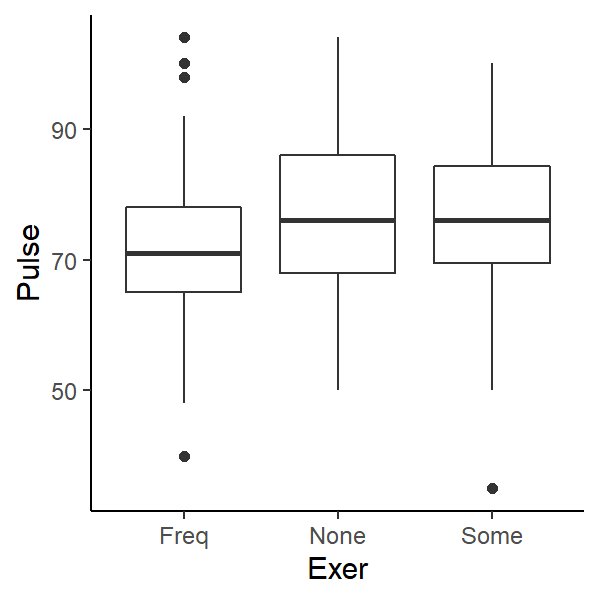

Overall lecture aims
- Identify the structure of general linear models
- Describe how linear models are parametrized
- Understand how to use linear models
- Understand how to interpret and evaluate linear models
Recommended reading:
Chapter 5.5 Getting Started with R
Using datasets
Datasets used here are from the package MASS which comes with R. To use any data in MASS, library(MASS) needs to be called first.
By the end of this lecture you should:
- Understand the parameters of a linear model with multiple predictor variables
- Parametrise and use a multiple regression model to predict values from the R output of a linear regression
- Interpret and complete ANOVA tables with multiple predictor variables
- Understand an interaction between two predictor variables
- Conduct a multiple regression in R with 2 continuous or categorical predictor variables or a combination
Previously, we parametrised slopes and intercepts of simple linear models
With one continuous response variable and one continuous predictor variable
\[Y = \beta_0 + \beta_1 X\]
where the parameters \(\beta_0\) = intercept and \(\beta_1\) = slope

So far these parameters have been fixed…
Parameters of a linear model can be random or fixed
- Important to consider when designing experiments – you decide!
- Changes the hypotheses & interpretation of results
- Fixed:
Constant across all groupings (how observations are related – e.g. populations of individuals)
- Random:
Vary across groupings, or represent a random sample from a larger population
Fixed slopes linear model
- All groups (Frequency of exercise in this example) have the same slope
- Response of groups to predictor variable x is consistent across groups
- Cannot extrapolate beyond groups
- Thus can only draw conclusions for these groups
Random slopes linear model
- All groups have different slopes
- Response of groups to predictor variable x varies among groups
- Can extrapolate beyond observed groups
- Identity of group is not the main question
- Thus can generalise to other groups outside study
Distinguishing between Fixed or random is important
Changes the way Analysis of Variance (ANOVA) is calculated
- Changes formula for Mean Sum of Squares
- Changes numerator/denominator of F ratio
- Thus changes interpretation
- Called Type I (fixed), II (random) or III (mixed)
t-tests, simple linear models, ANOVA
- Predictor variables can be categorical (called factors in R), like exercise in Figures 3.1 & 3.2
- Can have two or more sub-categories (called levels in R)
- E.g. sex: male/female, level of drug: low/medium/high
Typically, the relationship between a continuous response variable & categorical predictors is analysed using a special case of statistical models: One-way Analysis of Variance (ANOVA)
Confusingly, ANOVA can refer to how data are spread around a single mean (variance) and also a way of comparing means (via how similar their variances are) for experimental designs with a predictor variable with any number of levels.
Fixed one-way ANOVA with 2 or more levels
- level = subsets within categories
- e.g. male/female, low/medium/high
- We are testing means for each level
- What is the null hypothesis?
\(H_0:\) All levels come from the same population (have the same mean)
Pulse rate and exercise

We can do an ANOVA and get the following output:
Analysis of Variance Table
Response: Pulse
Df Sum Sq Mean Sq F value Pr(>F)
Exer 2 900.5 450.23 3.3783 0.03618 *
Residuals 189 25188.2 133.27
---
Signif. codes:
0 '***' 0.001 '**' 0.01 '*' 0.05 '.' 0.1 ' ' 1
Conclusions: We can reject the null hypothesis that there is no difference in mean pulse rate of students with different amount of exercise
Report the degrees of freedom (df), the F ratio and the P value like
\[F_{2,189} = 3.38, P = 0.036\]
Where 2 is the df of the groups (Exer) and 189 is the df of the residual error (Residuals).
The ANOVA table
| Variance among groups |
SSR |
number of levels - 1 |
\(MSR = \frac{SSR}{df}\) |
\(\frac{MSR}{MSE}\) |
|
| Variance within group |
SSE |
number of observations - 2 |
\(MSE = \frac{SSE}{df}\) |
|
|
| Total error |
SSY |
total number of observations - 1 |
|
|
|
Calculating group means
Check summary() to see group means
Call:
lm(formula = Pulse ~ Exer, data = survey)
Residuals:
Min 1Q Median 3Q Max
-41.188 -7.968 -0.188 7.812 32.032
Coefficients:
Estimate Std. Error t value Pr(>|t|)
(Intercept) 71.968 1.184 60.763 <2e-16 ***
ExerNone 4.796 3.040 1.578 0.116
ExerSome 4.219 1.752 2.408 0.017 *
---
Signif. codes:
0 '***' 0.001 '**' 0.01 '*' 0.05 '.' 0.1 ' ' 1
Residual standard error: 11.54 on 189 degrees of freedom
(45 observations deleted due to missingness)
Multiple R-squared: 0.03452, Adjusted R-squared: 0.0243
F-statistic: 3.378 on 2 and 189 DF, p-value: 0.03618
- Groups are calculated in alphabetical order - Here “Frequent” group is calculated first
Estimate column shows the difference in means - see below- P values test differences in pairs of means BUT should we be doing multiple comparisons? (no)
Model coefficients:
(Intercept) ExerNone ExerSome
71.968421 4.796285 4.219079
R-calculated means:
Freq None Some
71.96842 76.76471 76.18750
Manually calculated means for “None” group:
71.9684211 + 4.7962848 = 76.7647059
Manually calculated means for “Some” group:
71.9684211 + 4.2190789 = 76.1875
ANOVA and hypothesis testing
Important to remember:
- ANOVA is a test of means (analysis of variance about the mean)
- F-ratio tells you that there is a difference in the means between pairs of groups but NOT which pairs are different
- Need post-hoc tests like Tukey’s Honest Significant Differences (not covered in this lecture) to see which pairs are significantly different
Recap time!
Test your understanding so far by answering the questions below. Click Code to see the answer.
What is the significance of fixed and random variables for drawing conclusions?
It changes the inferred conclusion. In fixed models, the identities of the groupings are the main level of inference whereas in random models we consider the identity of the group to be randomly selected from a wider pool of candidates. Thus we can generalise our findings beyond our selected groups in random models but are limited to the groups we selected in fixed models.
For example, if we counted the population of 5 towns in Ireland and analysed the data using a fixed model, then we could only state our conclusion for those 5 towns and cannot draw conclusions for the whole of Ireland.
With a random model, we consider those 5 towns to be representitive of the whole of Ireland, we are not interested in those 5 towns in particular, thus we can generalise our conclusions to the whole of Ireland. E.g. those 5 towns were randomly selected from all the candidate towns to survey.
What is the function to conduct an Analysis of Variance in R?
Either summary(aov()) or anova(lm()) will do a Type I ANOVA. Type II and Type III models require additional packages.
How many groups were in the categorical predictor variable in this one-way analysis of variance? \(F_{5,24} = 14.23, P < 0.001\)
6 groups. The degree of freedom for group is 5 and this is calculated from the number of groups - 1. So 5 + 1 = 6.
Multiple regression
We can include more than 1 predictor variable in our models
Multiple regression: Linear models with two or more predictor variables
- Models the effect of multiple predictors on response
- Two-way ANOVAs etc. are special cases of multiple regression
- If 3 categorical predictors, then three-way ANOVA etc…
- With more predictor variables, the model becomes complex
- And potentially less informative/difficult to interpret
- Remember the trade-off between generality & complexity
- Keep it simple
Height and hand width
Imagine we asked the class ‘is there a relationship between your height and the width of your hand?’
The linear model is:
\[ height = \beta_0 + \beta_1 hand \space width + \varepsilon_i\]
Good, but let’s ask is it also important to consider the sex of the student?
Does including information about sex improve our ability to detect/understand patterns?
The linear model now has two predictor variables and is written as:
\[ height = \beta_0 + \beta_{sex} hand \space width + \varepsilon_i\]
Notice that the slope parameter (\(\beta_{sex}\)) now specifies that it is dependent on the sex of the student.
Since Sex is a categorical predictor with 2 levels, this model now describes two lines - one for each level of the predictor (male/female)
Does student height vary with hand width and between sexes?
- Continuous response
- Categorical predictor
- Continuous predictor (also called covariate)
- Can be analysed using multiple linear models
- Two types:
- Additive model (Fixed slopes model)
- Interactive model (Random slopes model)
Analysis of Covariance is a special case with unique assumptions (not considered here), else called a general linear model
Fixed slopes (additive model)
- No interaction term
- Same slope
- Intercept for each sex
- in
R: lm(Y ~ A + B, data) where A & B are the two predictor variables
H0: There is no effect of A or B on the response variable
H1: There is an effect of A or B on the response variable
(Intercept) Wr.Hnd SexMale
137.686951 1.594446 9.489814
Parametrised slope for females:
Female height = 137.687 + 1.594 hand width
Parametrised slope for males:
Male height = (137.687 + 9.49) + 1.594 hand width
Remember R shows the difference between parameter estimates so you need to extract the correct values
Random slopes (interactive model)
The random slopes model has in interaction term. In R this is coded lm(Height ~ Wr.Hnd * Sex, survey).
The linear model is now:
\[ height = \beta_{0_{sex}} + \beta_{sex} hand \space width + \varepsilon_i\]
(Intercept) Wr.Hnd SexMale Wr.Hnd:SexMale
147.4497131 1.0385045 -7.1567184 0.9020249
To parametrise the model we now need to calculate different values for slopes. In the coefficient list, Wr.Hnd:SexMale is the difference in the value of the slope relative to the slope for female Wr.Hnd. Remember: female is alphabetically before male so R calculates the variances for females first, then males.
Parametrised slope for females:
Female height = 147.45 + 1.039 hand width
Parametrised slope for males:
Male height = (147.45 -7.157) + (1.039 + 0.902) hand width
H0: There is no effect of A or B or their interaction on the response variable
H1: There is an effect of A or B or their interaction on the response variable
The multiple regression ANOVA table
Variance of predictors (SS) is partitioned out from total SS in order it is entered in to R
| Wr.Hnd |
1 |
7298.70354 |
7298.70354 |
150.128633 |
3.359137e-26 |
| Sex |
1 |
2912.37262 |
2912.37262 |
59.905231 |
4.604092e-13 |
| Wr.Hnd:Sex |
1 |
90.06608 |
90.06608 |
1.852589 |
1.749916e-01 |
| Residuals |
203 |
9869.11550 |
48.61633 |
NA |
NA |
The ANOVA table for 2 predictors and their interaction
| Factor A |
SSR of A |
number of levels of A - 1 |
|
|
|
| Factor B |
SSR of B |
number of levels of B - 1 |
|
|
|
| Factor A x B |
SSR of A & B |
df of A x df of B |
|
|
|
| Within error |
SSE |
levels of A x levels of B X (number of observations - 1) |
|
|
|
| Total error |
SSY |
(levels of A x levels of B X number of observations) - 1 |
|
|
|
Interpreting the ANOVA table
P(Interaction term) > 0.05, thus the effect of hand width on
student height is not dependent of the sex of the student
| Wr.Hnd |
1 |
7298.70354 |
7298.70354 |
150.128633 |
3.359137e-26 |
| Sex |
1 |
2912.37262 |
2912.37262 |
59.905231 |
4.604092e-13 |
| Wr.Hnd:Sex |
1 |
90.06608 |
90.06608 |
1.852589 |
1.749916e-01 |
| Residuals |
203 |
9869.11550 |
48.61633 |
NA |
NA |
The interaction term A:B
- Measures the dependence of the level of one factor on the level of the other factors
- If interaction term is not significant:
- effect of one factor on other is additive (independent of each other)
- If significant:
- indicates synergistic or antagonistic effects between factors
- Should be main conclusion of analysis
The fundamentals of Linear regression
That’s the basics of linear regression!
They are widely used in biological statistics so you’ll likely come across them when reading scientific studies.
The same concepts apply for any number or combination of predictor variables. Two, three, four predictor variables and so forth…it just becomes more complex to parameterise.
Remember, the aim is to quantify how much variation in the response variable is attributable to each predictor variable - minimise those residuals!
Common statistical analyses you should be able to do by applying the concepts in these lectures:
1 continuous response variable &:
- 1 continuous predictor variable - simple linear regression
- 2 continuous predictor variables (with/without their interaction) - multiple regression
- 1 categorical predictor variable - One-way ANOVA
- 1 continuous predictor variable & 1 categorical predictor variable (with/without their interaction) - ANCOVA/multiple regression
- 2 categorical predictor variables (with/without their interaction) - Two-way ANOVA
Recap time!
Test your understanding so far by answering the questions below. Click Code to see the answer.
What is the difference between an additive and interactive linear model?
An additive model does not describe an interaction between the two predictor variables. An interactive model describes that the effect of one predictor variable on the response variable is dependent on the second predictor variable.
What is the function to conduct an interactive multiple regression model in R?
lm(Y ~ A * B, data) where A & B are the two predictor variables. * denotes the interaction.
A multiple regression of crab shell width (response) with crab body depth (continuous predictor) for two species (categorical predictor: B or O) and their interaction had the following coefficients:
| (Intercept) |
2.6942643 |
| BD |
2.5449206 |
| spO |
-1.2531624 |
| BD:spO |
-0.1756934 |
What is the predicted shell length (mm) of a species O crab with a body depth of 15mm?
Answer: 36.97951 mm
Because B is alphabetically before O, the first parameter coefficients refer to species B.
The intercept for species O is 2.6942643-1.2531624 = 1.441102
The slope for species O is 2.5449206-0.1756934 = 2.369227
Thus the whole model for species O is:
shell length = 2.369227 * body depth + 1.441102
Using a value of 15 for body depth:
shell length = 2.369227 * 15 + 1.441102
= 36.97951 mm
